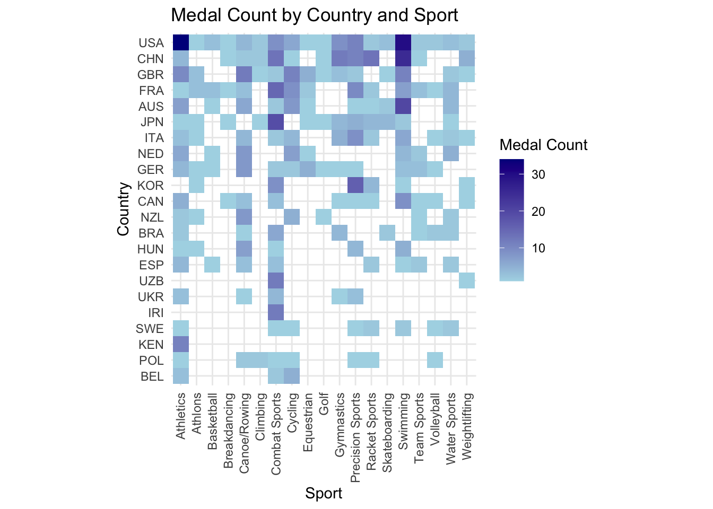

library(tidyverse)
library(hrbrthemes)
Athletes_df <- read_csv("/Users/tannerbessette/Desktop/SYE/athletes.csv")
Medals_df <- read_csv("/Users/tannerbessette/Desktop/SYE/medals.csv")Final Version of Olympics Project
R vs. Python Language Comparison
After conducting this project, one major take-away was that lots of functions have direct translations from R to Python. Here are some of the helpful functions that I found to be almost equivalent from R to Python:
Functions:
-filter() in R → .query() in Python
-group_by() in R → .groupby() in Python
-read_csv() in R → pd.read_csv() in Python
-as.factor() in R → .astype(“category”) in Python
-head() in R → dataset.head() in Python
-arrange() in R → .sort_values(by = ‘variable name’, ascending = False)
-pivot_longer() and pivot_wider() in R with names_from and values_from as arguments
→ .pivot() in Python with index, columns, values as arguments
-left_join(), right_join(), full_join in R → pd.merge() with on = “variable name” and how as the other argument specifying the type of join (how = “left” for example)
-as.factor() in R → .astype(‘category’) in Python
-n() in R → .size() in PythonOther Syntax:
-%in% in R → .isin() in Python
-& in R → and in Python
- | in R → or in Python
-FALSE in R → False in Python
-TRUE in R → TRUE in Python
-c() to access/initialize a list in R → [] in Python
- |> in R → . in PythonAdditionally, I have found the plotting structure to be overall very similar using ggplot in R and LetsPlot in Python. There were slight differences with quotes which I found to be a difference between R and Python in other situations as well, but functions within plots are all named the same from what I’ve seen, with the same/similar inputs.
Of course, there were differences I encountered as well. A specific difference that I found challenging was that there is not a good Python equivalent to mutate in R, which I find to be one of the most helpful and one of my most-used functions when I am manipulating data in R. Transform in Python works similarly to a mutate in R that is doing a mathematical operation, and assign in Python creates a new column similarly to mutate, but there is not an exact mutate equivalent in Python.
There are also some big downsides to using Python instead of R in this setting, in my opinion. After spending a few months getting familiar using and practicing Python, there are a couple of huge downsides to using Python for a basic data science project, and reasons that I would personally prefer R. The first reason is that code becomes unreadable so quickly in Python. Instead of a simple pipe in R, where you can space out and enter in between each step to clearly show the process and keep the coding tidy, in Python you need to use a . in between each new function you are applying to the dataset, and you cannot neatly space out or enter between operations. Evidence of this difference is how much Python code needs to be broken down into multiple steps as you code, whereas in R it could all be contained within on data piping process easily.
Interpretability is so much more feasible in R. For somebody unfamiliar with either language, it would be easier to learn basic R, and it would be easier for somebody who doesn’t code to be able to understand what the coder is doing to the data each step of the data manipulation process. The structure of the code is much cleaner and easier to follow.
The majority of the math that I do in R is using built-in functions, whereas I find it tedious to have to load a library into Python in order to even do math, and then call that package when doing some of the operations. It feels like R was made specifically to perform mathematical and statistical calculations, and Python is good at doing a variety of things, but for math and statistics specifically, it is not typically as efficient as using R. Although I do definitely prefer R overall for this style of project, the two languages are similar, especially with things like reading in data, joining datasets, and basic plotting.
Olympics Project:
In this project I wanted to investigate and visualize how the men’s and women’s teams for all of the countries that participated in the 2024 Olympics performed compared to each other. Specifically, I wanted to see how many male and female athletes each country sends, and how many medals different country’s male and female teams win.
For my investigation, I utilized a Kaggle dataset called “Paris 2024 Olympic Summer Games” by Petro, who has a PhD and is actively working as a data scientist at CheAI. This dataset was updated daily throughout the Olympics, and includes all of the athletes that competed, all of the events that were hosted, all of the medals that were won, the daily schedules, the sport venues, and so much more. For this project I utilized his athletes and medals datasets. The athletes dataset includes each athlete, their gender, the country they are competing for, and other facts about them. The medals dataset includes information on each gold, silver, and bronze medal that was won in each event throughout the Olympics, and the athlete/team that won each medal.
Here is the R code that I utilized for this project. After I am finished with the R code, I will include the equivalent Python code to do the same process to help compare the languages.
OLYMPICS PROJECT IN R
Load libraries and read in datasets:
Create male and female datasets:
Male_Athletes_df <- Athletes_df %>%
filter(gender == "Male")
Female_Athletes_df <- Athletes_df %>%
filter(gender == "Female")Total male and female medals for each sport:
Male_Total_Medal_Counts <- Medals_df %>%
filter(gender == "M") %>%
group_by(country_code) %>%
summarise(medal_totals = n())
Female_Total_Medal_Counts <- Medals_df %>%
filter(gender == "W") %>%
group_by(country_code) %>%
summarise(medal_totals = n()) Visualize the total number of male athletes by country, and fill the bars by medals won to indicate the proportion of each country’s athletes who medalled:
Male_Athletes_Count <- Male_Athletes_df %>%
group_by(country_code) %>%
summarise(athlete_count = n()) %>%
arrange(desc(athlete_count))
# join the medals counts with the athletes count
Male_Athletes_Count <- left_join(
Male_Athletes_Count, Male_Total_Medal_Counts, by = "country_code")
# Calculate max country counts and visualize the top 10 countries:
Male_Athletes_Count <- Male_Athletes_Count %>%
filter(athlete_count > 128)
# Create the plot:
Male_Athletes_Count_barplot <- ggplot(data = Male_Athletes_Count) +
geom_bar(aes(x = reorder(country_code, -athlete_count), y = athlete_count), fill = "lightblue", stat = "identity") +
geom_bar(aes(x = reorder(country_code, -athlete_count), y = medal_totals), fill = "darkblue", stat = "identity") +
labs(title = "Male Athletes and Medals by Country",
x = "Country",
y = "Male Athletes and Medal Counts") +
theme_minimal() +
theme(legend.position = "none")
print(Male_Athletes_Count_barplot)
France and USA both sent many male athletes to the Olympics, and received a lot of medals. Germany and Spain, despite sending many male athletes, received relatively few total medals. China and Great Britain sent less athletes than some other countries, but had a high proportion of their male athletes medal.
Visualize the total number of female athletes by country, and fill the bars by medals won to indicate the proportion of each country’s athletes who medalled:
Female_Athletes_Count <- Female_Athletes_df %>%
group_by(country_code) %>%
summarise(athlete_count = n()) %>%
arrange(desc(athlete_count))
# join the medals counts with the athletes count
Female_Athletes_Count <- left_join(
Female_Athletes_Count, Female_Total_Medal_Counts, by = "country_code")
# Calculate max country counts and visualize the top 10 countries:
Female_Athletes_Count <- Female_Athletes_Count %>%
filter(athlete_count > 177)
# Create the plot:
Female_Athletes_Count_barplot <- ggplot(data = Female_Athletes_Count) +
geom_bar(aes(x = reorder(country_code, -athlete_count), y = athlete_count), fill = "lightblue", stat = "identity") +
geom_bar(aes(x = reorder(country_code, -athlete_count), y = medal_totals), fill = "darkblue", stat = "identity") +
labs(title = "Female Athletes and Medals by Country",
x = "Country",
y = "Female Athletes and Medal Counts") +
theme_minimal() +
scale_fill_viridis_c() +
theme(legend.position = "none")
print(Female_Athletes_Count_barplot)
USA and France sent the most female athletes as well. USA and China had the highest number of their female athletes medal. Despite being seventh in the total number of female athletes that participated in the Olympics, Spain had a remarkably low proportion of their athletes receive medals.
HEATMAPS
Heatmaps provide a way to visualize where each country’s medals are coming from, and how different countries perform in different sports.
Create a Sports Category variable that groups similar sports together:
# Create new Sport_Category variable for heatmap that reduces
# the amount of categories:
Medal_Counts <- Medals_df %>%
mutate(Sport_Category = as.factor(case_when(
discipline %in% c("3x3 Basketball", "Basketball") ~ "Basketball",
discipline %in% c("Badminton", "Table Tennis", "Tennis") ~ "Racket Sports",
discipline %in% c("Boxing", "Taekwondo", "Wrestling", "Judo") ~ "Combat Sports",
discipline %in% c("Swimming", "Marathon Swimming", "Diving", "Artistic Swimming") ~
"Swimming",
discipline %in% c("Volleyball", "Beach Volleyball") ~ "Volleyball",
discipline %in% c("Cycling BMX Freestyle", "Cycling BMX Racing",
"Cycling Mountain Bike",
"Cycling Road", "Cycling Track") ~ "Cycling",
discipline %in% c("Water Polo", "Surfing", "Sailing") ~ "Water Sports",
discipline %in% c("Artistic Gymnastics", "Rhythmic Gymnastics",
"Trampoline Gymnastics") ~ "Gymnastics",
discipline == "Athletics" ~ "Athletics",
discipline %in% c("Canoe Slalom", "Canoe Sprint", "Rowing") ~ "Canoe/Rowing",
discipline == "Equestrian" ~ "Equestrian",
discipline %in% c("Football", "Handball", "Hockey", "Rugby Sevens") ~
"Team Sports",
discipline %in% c("Archery", "Shooting", "Fencing") ~ "Precision Sports",
discipline %in% c("Triathlon", "Modern Pentathlon") ~ "Athlons",
discipline == "Weightlifting" ~ "Weightlifting",
discipline == "Skateboarding" ~ "Skateboarding",
discipline == "Breaking" ~ "Breakdancing",
discipline == "Sport Climbing" ~ "Climbing",
discipline == "Golf" ~ "Golf",
TRUE ~ "Other" # default if any sport doesn't match
)))Team Sports is a vague category name, I chose that to keep the name more concise; it consists of team sports besides basketball that are played with more than 4 people, (Rugby, Football, Handball, and Hockey). The “Athlons” level contains the triathlon and Modern Pentathlon.
Heatmap for Medals:
# group by our new Sport_Category variable before counting number of medals
Medal_Counts <- Medal_Counts %>%
group_by(country_code, Sport_Category) %>%
mutate(count = n()) %>%
arrange(desc(count))
# Only keep countries who got at least 10 total medals:
# (because heatmap was getting sloppy)
Medal_Counts <- Medal_Counts %>%
group_by(country_code) %>%
mutate(total_count = n()) %>%
filter(total_count >= 10)
# Heatmap
ggplot(Medal_Counts, aes(x = Sport_Category,
y = fct_reorder(country_code, total_count),
fill= count)) +
geom_tile() +
labs(title = "Medal Count by Country and Sport",
x = "Sport",
y = "Country") +
theme_minimal() +
theme(axis.text.x = element_text(angle = 90, vjust = 0.5, hjust=1)) +
scale_fill_gradient(low="lightblue", high="darkblue", name = "Medal Count") +
coord_fixed()
It appears that there is a wide variety of countries who medalled in athletics and in combat sports. All of the countries who had the most overall medals also have a significant number of medals in swimming, likely because there are so many available medals to win in swimming. A country that stands out in the plot is Kenya - they are one of the strongest performers in the whole world in athletics, yet they didn’t obtain a single medal in any other sports!
Now, let’s split up the heatmap between men and women:
Men’s Medal Heatmap:
# Only keep countries who got at least 10 total medals:
# (because heatmap was getting sloppy)
# group by our new Sport_Category variable before counting number of medals
Male_Medal_Counts <- Medal_Counts %>%
filter(gender == "M") %>%
group_by(country_code, Sport_Category) %>%
mutate(count = n()) %>%
arrange(desc(count))
Male_Medal_Counts <- Male_Medal_Counts %>%
group_by(country_code) %>%
mutate(total_count = n()) %>%
filter(total_count >= 10)
# Heatmap
ggplot(Male_Medal_Counts, aes(x = Sport_Category,
y = reorder(country_code, total_count),
fill= count)) +
geom_tile() +
labs(title = "Medal Count by Country and Sport (Male)",
x = "Sport",
y = "Country") +
theme_minimal() +
theme(axis.text.x = element_text(angle = 90, vjust = 0.5, hjust=1)) +
scale_fill_gradient(low="lightblue", high="darkblue", name = "Medal Count") +
coord_fixed()
Similarly to Kenya with athletics, Iran received zero medals in all other sports, but they performed very strongly in combat sports, getting some of the most male combat sport medals of any country.
USA received a huge majority of their male medals from athletics. Combat sports, swimming, and canoe/rowing had a wide spread of countries perform well, without just one or two obvious countries dominating a huge majority of those medals.
Women’s Medal Heatmap:
# Only keep countries who got at least 10 total medals:
# (because heatmap was getting sloppy)
# group by our new Sport_Category variable before counting number of medals
Female_Medal_Counts <- Medal_Counts %>%
filter(gender == "W") %>%
group_by(country_code, Sport_Category) %>%
mutate(count = n()) %>%
arrange(desc(count))
Female_Medal_Counts <- Female_Medal_Counts %>%
group_by(country_code) %>%
mutate(total_count = n()) %>%
filter(total_count >= 10)
# Heatmap
ggplot(Female_Medal_Counts, aes(x = Sport_Category,
y = reorder(country_code, total_count),
fill= count)) +
geom_tile() +
labs(title = "Medal Count by Country and Sport (Female)",
x = "Sport",
y = "Country") +
theme_minimal() +
theme(axis.text.x = element_text(angle = 90, vjust = 0.5, hjust=1)) +
scale_fill_gradient(low="lightblue", high="darkblue", name = "Medal Count") +
coord_fixed()
The USA women clearly received far more medals than any other country’s women’s teams did. They were especially dominant in swimming, with China and Australia being the only other countries who even came close, and a big drop off after them.
An overall takeaway from the heatmaps is that the countries that tend to get the most overall medals tend to get some medals from almost every sport, and tend to do especially well in swimming and athletics, where there are the most medals up for grabs.
Create Heatmaps that color based on proportion of medals won in each sport:
Male Medal Proportion Heatmap:
Male_Medal_Counts <- Male_Medal_Counts %>%
group_by(Sport_Category) %>%
mutate(total_sport_medals = sum(count)) %>%
mutate(prop_sport_medals = count / total_sport_medals)
# Heatmap
ggplot(Male_Medal_Counts, aes(x = Sport_Category,
y = reorder(country_code, total_count),
fill= prop_sport_medals)) +
geom_tile() +
labs(title = "Proportion of Medals Won for Each Sport (Male)",
x = "Sport",
y = "Country") +
theme_minimal() +
theme(axis.text.x = element_text(angle = 90, vjust = 0.5, hjust=1)) +
scale_fill_gradient(low="lightblue", high="darkblue", name = "Medal Proportion") +
coord_fixed()
The male proportion heatmap helps to highlight how dominant countries were in certain sports. Specifically, USA and France being the only countries to medal in breakdancing, and USA, France, and Germany being the only countries to medal in volleyball. Basketball, skateboarding, and golf also only had three countries receive a medal in the men’s competitions.
It also demonstrates that although certain countries had many medals in certain sports (i.e. USA in athletics), it does not mean that they had as high of a porportion of total medals in that sport.
Female Medal Proportion Heatmap:
Female_Medal_Counts <- Female_Medal_Counts %>%
group_by(Sport_Category) %>%
mutate(total_sport_medals = sum(count)) %>%
mutate(prop_sport_medals = count / total_sport_medals)
# Heatmap
ggplot(Female_Medal_Counts, aes(x = Sport_Category,
y = reorder(country_code, total_count),
fill= prop_sport_medals)) +
geom_tile() +
labs(title = "Proportion of Medals Won for Each Sport (Female)",
x = "Sport",
y = "Country") +
theme_minimal() +
theme(axis.text.x = element_text(angle = 90, vjust = 0.5, hjust=1)) +
scale_fill_gradient(low="lightblue", high="darkblue", name = "Medal Proportion") +
coord_fixed()
In the women’s competitions, climbing, breakdancing, and golf seem to be the sports that were most dominated by just a couple of countries. Many of the sports in the women’s proportions plot have a wide range of countries with roughly the same proportion of medals. Some of these sports include athletics, combat sports, and swimming. Swimming proportions being close was especially surprising to me in this plot, given how many medals we could see that USA, China, and Australia won in total. It just goes to show how many total swimming medals are up for grabs.
Now, I will be going through the same project, this time in Python.
Specify the correct Python path before switching to Python:
library(reticulate)
use_python("/Library/Frameworks/Python.framework/Versions/3.12/bin/python3", required = TRUE)OLYMPICS PROJECT IN PYTHON
import pandas as pd
import numpy as np
from palmerpenguins import load_penguins
from plotnine import *
# Read in data:
Athletes_df = pd.read_csv("/Users/tannerbessette/Desktop/SYE/athletes.csv")
Medals_df = pd.read_csv("/Users/tannerbessette/Desktop/SYE/medals.csv")
# Create Male and Female Datasets:
Male_Athletes_df = Athletes_df.query("gender == 'Male'")
Female_Athletes_df = Athletes_df.query("gender == 'Female'")
# Total Male and Female Medals for each sport:
# (learned reset_index from ChatGPT - helps to mimick summarise in R)
Male_Total_Medal_Counts = Medals_df.query("gender == 'M'").groupby("country_code").size().reset_index(name = "medal_totals")
Female_Total_Medal_Counts = Medals_df.query("gender == 'W'").groupby("country_code").size().reset_index(name = "medal_totals")
# MALE BAR PLOT:
# data manipulation (group_by, summarise):
Male_Athletes_Count = Male_Athletes_df.groupby("country_code").size().reset_index(name = "athlete_count")
# join data (looked ahead in textbook to ch. 22):
# (pd.merge is the join function, on is like by, how = join method(L/R))
Male_Athletes_Count_joined = pd.merge(Male_Athletes_Count, Male_Total_Medal_Counts, on="country_code", how="left")
# Only keep top 10 countries with most athletes:
Male_Athletes_Count_joined = Male_Athletes_Count_joined.query("athlete_count > 128")
# Create the Male bar plot with country's athletes and medals:
#Male_Athletes_Count.sort_values (essentially arrange -> do instead of reorder)
Male_Athletes_Count_joined = Male_Athletes_Count_joined.sort_values("athlete_count", ascending=False)
plot_1 = (
ggplot() +
geom_bar(aes(x = 'country_code', y = 'athlete_count'), fill = "lightblue", stat = "identity", data = Male_Athletes_Count_joined) +
geom_bar(aes(x = 'country_code', y = 'medal_totals'), fill = "darkblue", stat = "identity", data = Male_Athletes_Count_joined) +
labs(title = "Male Athletes and Medals by Country",
x = "Country",
y = "Male Athletes and Medal Counts") +
theme_minimal()
)
plot_1.show()
Reading in datasets is very similar, as is filtering (query in Python), and plotting. Mutations/summarizing are a bit different between the two languages, it was a two step process to create the athlete count variable in Python (.size() then .reset_index()) instead of one in R. Quotations also slightly differ between the two languages, with Python using single quotes frequently where R would have used double quotes, or Python using double quotes where R would have used no quotes.
# FEMALE BAR PLOT:
# data manipulation (group_by, summarise):
Female_Athletes_Count = Female_Athletes_df.groupby("country_code").size().reset_index(name = "athlete_count")
# join data (looked ahead in textbook to ch. 22):
# (pd.merge is the join function, on is like by, how = join method(L/R))
Female_Athletes_Count_joined = pd.merge(Female_Athletes_Count, Female_Total_Medal_Counts, on="country_code", how="left")
# Only keep top 10 countries with most athletes:
Female_Athletes_Count_joined = Female_Athletes_Count_joined.query("athlete_count > 177")
# Create the Male bar plot with country's athletes and medals:
# (arrange first):
Female_Athletes_Count_joined = Female_Athletes_Count_joined.sort_values("athlete_count", ascending=False)
plot_2 = (
ggplot() +
geom_bar(aes(x = 'country_code', y = 'athlete_count'), fill = "lightblue", stat = "identity", data = Female_Athletes_Count_joined) +
geom_bar(aes(x = 'country_code', y = 'medal_totals'), fill = "darkblue", stat = "identity", data = Female_Athletes_Count_joined) +
labs(title = "Female Athletes and Medals by Country",
x = "Country",
y = "Female Athletes and Medal Counts") +
theme_minimal()
)
plot_2.show()Data manipulation before Heatmaps:
# Used ChatGPT for this, first step is sorting which sport will be the levels
# for the factor variable, second is assigning names for each level
Medals_df['Sport_Category'] = np.select(
[
Medals_df['discipline'].isin(["3x3 Basketball", "Basketball"]),
Medals_df['discipline'].isin(["Badminton", "Table Tennis", "Tennis"]),
Medals_df['discipline'].isin(["Boxing", "Taekwondo", "Wrestling", "Judo"]),
Medals_df['discipline'].isin(["Swimming", "Marathon Swimming", "Diving", "Artistic Swimming"]),
Medals_df['discipline'].isin(["Volleyball", "Beach Volleyball"]),
Medals_df['discipline'].isin(["Cycling BMX Freestyle", "Cycling BMX Racing",
"Cycling Mountain Bike", "Cycling Road", "Cycling Track"]),
Medals_df['discipline'].isin(["Water Polo", "Surfing", "Sailing"]),
Medals_df['discipline'].isin(["Artistic Gymnastics", "Rhythmic Gymnastics", "Trampoline Gymnastics"]),
Medals_df['discipline'] == "Athletics",
Medals_df['discipline'].isin(["Canoe Slalom", "Canoe Sprint", "Rowing"]),
Medals_df['discipline'] == "Equestrian",
Medals_df['discipline'].isin(["Football", "Handball", "Hockey", "Rugby Sevens"]),
Medals_df['discipline'].isin(["Archery", "Shooting", "Fencing"]),
Medals_df['discipline'].isin(["Triathlon", "Modern Pentathlon"]),
Medals_df['discipline'] == "Weightlifting",
Medals_df['discipline'] == "Skateboarding",
Medals_df['discipline'] == "Breaking",
Medals_df['discipline'] == "Sport Climbing",
Medals_df['discipline'] == "Golf"
],
[
"Basketball",
"Racket Sports",
"Combat Sports",
"Swimming",
"Volleyball",
"Cycling",
"Water Sports",
"Gymnastics",
"Athletics",
"Canoe/Rowing",
"Equestrian",
"Team Sports",
"Precision Sports",
"Athlons",
"Weightlifting",
"Skateboarding",
"Breakdancing",
"Climbing",
"Golf"
],
default="Other" # default if any sport doesn't match
)
# Convert 'Sport_Category' to a categorical type
Medals_df['Sport_Category'] = Medals_df['Sport_Category'].astype('category')Creating the sport categories was different in Python and harder to follow, you need to specify the group order beforehand then the list of categories, instead of using the ~ at each row when I did it in R.
Create a medal count variable that counts country’s medals by sport:
Medal_Counts = Medals_df.groupby(['country_code', 'Sport_Category']).size().reset_index(name='count').sort_values(by='count', ascending=False)<string>:1: FutureWarning: The default of observed=False is deprecated and will be changed to True in a future version of pandas. Pass observed=False to retain current behavior or observed=True to adopt the future default and silence this warning.More manipulations for combined Heatmap:
# Create a total medal count variable, and only keep countries
# with medals in at least 1 sport
total_counts = Medal_Counts.groupby('country_code').size().reset_index(name='total_count')
Medal_Counts = pd.merge(Medal_Counts, total_counts, on = "country_code",
how = "left")
Medal_Counts = Medal_Counts.query("total_count > 1")Create the Combined Heatmap:
overall_countries_to_keep = ['AUS', 'BRA', 'CAN', 'CHN', 'ESP', 'FRA', 'GBR', 'GER', 'HUN', 'ITA', 'JPN', 'KOR', 'NED', 'NZL', 'USA']
Overall_Medal_Counts = Medal_Counts.query("country_code in @overall_countries_to_keep").query("count > 0")
plot_3 = (
ggplot(Overall_Medal_Counts, aes(x='Sport_Category',
y='country_code',
fill='count')) +
geom_tile() +
labs(title="Medal Count by Country and Sport",
x="Sport",
y="Country") +
theme_minimal() +
theme(axis_text_x=element_text(angle=90, vjust=0.5, hjust=1)) +
coord_fixed() +
scale_fill_gradient(low="lightblue", high="darkblue", name = "Medal Count")
)
plot_3.show()
# changing the geom_tile() width and height arguments did
# nothing to improve visual appearance of the plotIn the code chunk above I specified a list of countries to keep, based on the same requirements that I had in my plots in R. The query(“country_code in @overall_countries_to_keep”) is a good example of some differences in syntax than we would have in doing this in R, specifically with the quotes around the whole filtering statement.
Men’s Overall Medal Heatmap:
Male_Medal_Counts = Medals_df.query("gender == 'M'").groupby(['country_code', 'Sport_Category']).size().reset_index(name = 'count').sort_values(by = 'count', ascending = False)<string>:1: FutureWarning: The default of observed=False is deprecated and will be changed to True in a future version of pandas. Pass observed=False to retain current behavior or observed=True to adopt the future default and silence this warning.More Male Data Manipulations:
total_male_counts = Male_Medal_Counts.groupby('country_code').size().reset_index(name='total_count')
Male_Medal_Counts = pd.merge(Male_Medal_Counts, total_male_counts, on = "country_code", how = "left")
Male_Medal_Counts = Male_Medal_Counts.query("total_count > 1")Male Heatmap Plot:
male_countries_to_keep = ['AUS', 'CHN', 'ESP', 'FRA', 'GBR', 'GER', 'HUN', 'IRI', 'ITA', 'JPN', 'KOR', 'NED', 'USA', 'UZB']
Updated_Medal_Counts = Male_Medal_Counts.query("country_code in @male_countries_to_keep").query("count > 0")
plot_4 = (
ggplot(Updated_Medal_Counts, aes(x='Sport_Category',
y='country_code',
fill='count')) +
geom_tile() +
labs(title="Medal Count by Country and Sport (Male)",
x="Sport",
y="Country") +
theme_minimal() +
theme(axis_text_x=element_text(angle=90, vjust=0.5, hjust=1)) +
coord_fixed() +
scale_fill_gradient(low="lightblue", high="darkblue", name = "Medal Count")
)
plot_4.show()Women’s Overall Medal Heatmap:
Female_Medal_Counts = Medals_df.query("gender == 'W'").groupby(['country_code', 'Sport_Category']).size().reset_index(name = 'count').sort_values(by = 'count', ascending = False)<string>:1: FutureWarning: The default of observed=False is deprecated and will be changed to True in a future version of pandas. Pass observed=False to retain current behavior or observed=True to adopt the future default and silence this warning.More Female Data Manipulations:
total_female_counts = Female_Medal_Counts.groupby('country_code').size().reset_index(name='total_count')
Female_Medal_Counts = pd.merge(Female_Medal_Counts, total_female_counts, on = "country_code", how = "left")
Female_Medal_Counts = Female_Medal_Counts.query("total_count > 1")Female Heatmap Plot:
female_countries_to_keep = ['AUS', 'BRA', 'CAN', 'CHN', 'FRA', 'GBR', 'GER', 'ITA', 'JPN', 'KOR', 'NED', 'NZL', 'USA']
Updated_Female_Medal_Counts = Female_Medal_Counts.query("country_code in @female_countries_to_keep").query("count > 0")
plot_5 = (
ggplot(Updated_Female_Medal_Counts, aes(x='Sport_Category',
y='country_code',
fill='count')) +
geom_tile() +
labs(title="Medal Count by Country and Sport (Female)",
x="Sport",
y="Country") +
theme_minimal() +
theme(axis_text_x=element_text(angle=90, vjust=0.5, hjust=1)) +
coord_fixed() +
scale_fill_gradient(low="lightblue", high="darkblue", name = "Medal Count")
)
plot_5.show()
Now create heatmaps based on proportion of sport’s medals instead of totals:
Create Male Proportions Dataset:
Male_prop = Male_Medal_Counts
Male_prop['total_sport_medals'] = Male_prop.groupby('Sport_Category')['count'].transform('sum')<string>:1: FutureWarning: The default of observed=False is deprecated and will be changed to True in a future version of pandas. Pass observed=False to retain current behavior or observed=True to adopt the future default and silence this warning.Male_prop['prop_sport_medals'] = Male_prop['count'] / Male_prop['total_sport_medals']Create Female Proportions Dataset:
Female_prop = Female_Medal_Counts
Female_prop['total_sport_medals'] = Female_prop.groupby('Sport_Category')['count'].transform('sum')<string>:1: FutureWarning: The default of observed=False is deprecated and will be changed to True in a future version of pandas. Pass observed=False to retain current behavior or observed=True to adopt the future default and silence this warning.Female_prop['prop_sport_medals'] = Female_prop['count'] / Female_prop['total_sport_medals']Instead of using a $ in R to access a dataset’s variable, you use [] in Python. Instead of a mutate function that I would have used in R, here I am telling Python what variable to save as prop_sport_medals to my male and female datasets.
Now create the proportions heatmap plots: Male Proportions Heatmap:
Updated_Male_Prop = Male_prop.query("country_code in @male_countries_to_keep").query("count > 0")
plot_6 = (
ggplot(Updated_Male_Prop, aes(x='Sport_Category',
y='country_code',
fill='prop_sport_medals')) +
geom_tile() +
labs(title="Proportion of Medals Won for Each Sport (Male)",
x="Sport",
y="Country") +
theme_minimal() +
theme(axis_text_x=element_text(angle=90, vjust=0.5, hjust=1)) +
scale_fill_gradient(low="lightblue", high="darkblue", name="Medal Proportion") +
coord_fixed()
)
plot_6.show()Female Proportions Heatmap:
Updated_Female_Prop = Female_prop.query("country_code in @female_countries_to_keep").query("count > 0")
plot_7 = (
ggplot(Updated_Female_Prop, aes(x='Sport_Category',
y='country_code',
fill='prop_sport_medals')) +
geom_tile() +
labs(title="Proportion of Medals Won for Each Sport (Female)",
x="Sport",
y="Country") +
theme_minimal() +
scale_fill_gradient(low="lightblue", high="darkblue", name="Medal Proportion") +
theme(axis_text_x=element_text(angle=90, vjust=1, hjust=1)) +
coord_fixed()
)
plot_7.show()
Specific Code Comparisons:
I thought it may be interesting to compare some of the specific data manipulations side by side now that we have seen the project in full in both R and Python.
Before making the male athletes and medals bar plot, I had to group by the country and add up all the athletes for each country.
Here is how I did it in R:
Male_Athletes_Count <- Male_Athletes_df %>%
group_by(country_code) %>%
summarise(athlete_count = n())
head(Male_Athletes_Count)# A tibble: 6 × 2
country_code athlete_count
<chr> <int>
1 AFG 3
2 AIN 15
3 ALB 5
4 ALG 27
5 AND 1
6 ANG 8And here is how I did it in Python:
# data manipulation (group_by, summarise):
Male_Athletes_Count = Male_Athletes_df.groupby("country_code").size().reset_index(name="athlete_count")
Male_Athletes_Count.head() country_code athlete_count
0 AFG 3
1 AIN 15
2 ALB 5
3 ALG 27
4 AND 1Obviously the group_by() and groupby() functions are extremely similar, as I highlighted in the function comparison. The .size() function in Python essentially does the same thing as the combination of a summarise and n() in R. In Python, to keep country_code and athlete_count as two different columns and keep the Male_Athletes_Counts as a dataframe, we need to use the reset_index() function.
Another example of side by side code comparisons of R and Python that I want to show is with joining datasets.
Here is how I performed the joining of the male athletes and male medals datasets before creating the bar plot using R:
Male_Athletes_Count <- left_join(Male_Athletes_Count, Male_Total_Medal_Counts,
by = "country_code")And here is how I did that in Python:
Male_Athletes_Count_joined = pd.merge(Male_Athletes_Count, Male_Total_Medal_Counts, on="country_code", how="left")Both languages are using a left join, and joining by matching the country_code in the two datasets they are joining. R has a built-in left_join() function to specify that the join type is left, while Python’s pd.merge() function can be used for all types of joins, and you use the how = “left” argument to specify that you want the join to be a left join. The on argument in this R example and the by argument in the Python example are used in the same exact way, to specify the variable to join on.